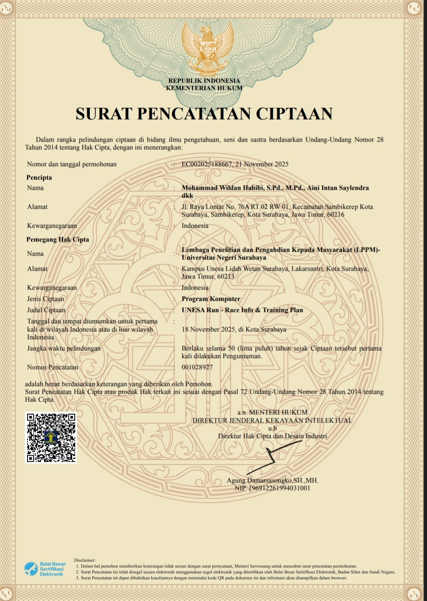
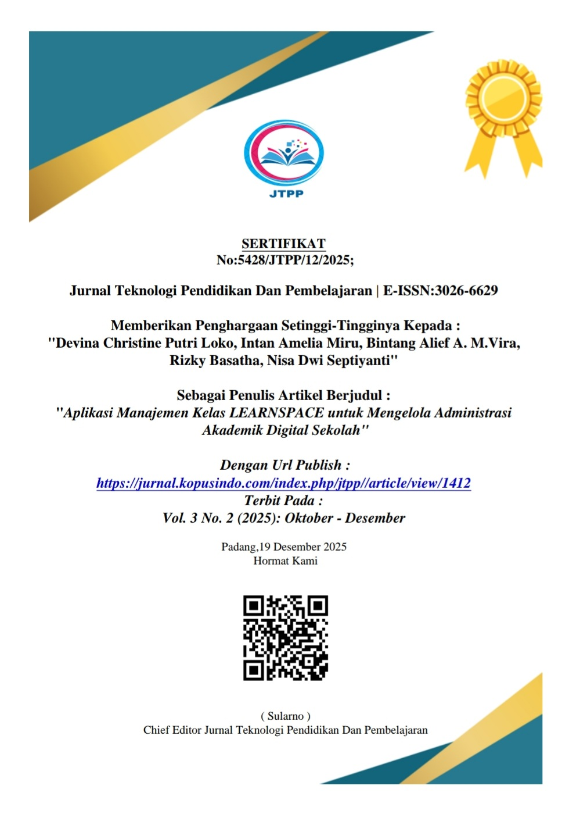

Sertifikat
Berikut beberapa sertifikat yang aku peroleh selamat perkuliahan saat ini, klik pada card untuk melihat detail foto dan dokumen.

Webinar Cyber Security: Introduction to SOC & Wazuh SIEM

HKI UNESA Run — Race Info & Training Plan

Sertifikat Penulis Artikel — LearnSpace